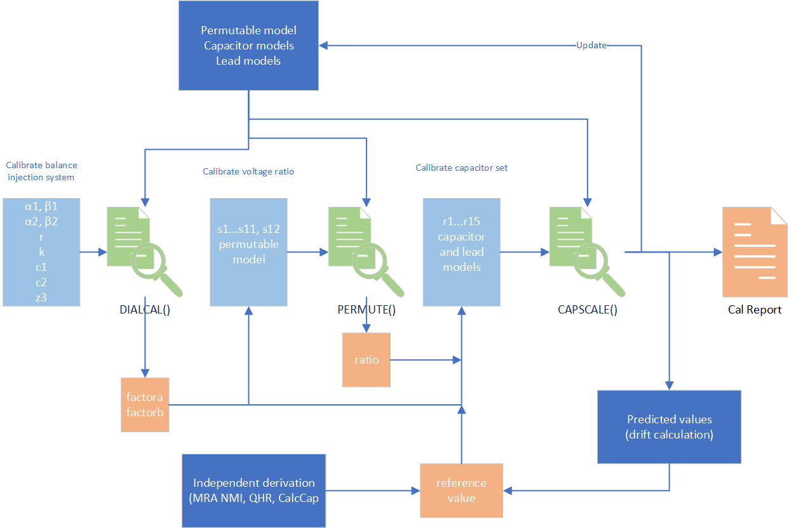

This software supports technical procedure ‘E.005.003: Establishing the MSL Capacitance Scale’ which describes all the technical processes and measurement models. At this stage the software does not include environmental sensitivities (temperature and pressure) and manages only a single prescribed set of measurements to establish the capacitance scale from 0.5 pF to 1000 pF. Extending the classes to provide this extra functionality should not be too difficult.
Assuming that the user is following the steps described in E.005 these instructions show how to enter the manually gathered data for processing. The figure below is an overview that shows where data is gathered (light blue boxes) for processing in the Python classes (light green) supported by additional information in the dark blue boxes. Traceable output values are captured in the orange boxes.
File Naming Convention¶
All data is entered as .csv files and it is essential to adopt a naming convention so that there is no ambiguity about which data has been used to produce a calibration report. The generic names for data should be
Main dial calibration: dialcal_in, dialcal_out.
Ratio calibration: ratiocal_in, ratiocal_out.
Capacitor set calibration: capcal_in, capcal_out.
Each of these is labelled with a date YYYY-MM-DD_alpha so that, for example, we might have ‘ratiocal_in_2020-12-02_b.csv’ as the set of dial readings for calibrating the 10:1 voltage ratio. Additionally, we have less frequently updated component files that are used for calculation.
Permutable capacitor: comp_permute
Set of capacitors and leads: comp_leads_caps
Reference value for AH11C1: reference_val_YYYY-MM-DD
Then there are the calculation runs that allow the selection of any combination of input data files to create a set of results for a capacitance scale buildup. The onus for selecting a sensible combination of input data files (i.e. making physical sense) rests with the operator. The processing of file collections is done with
The input set: main
Corresponding summary: summary_main
For example we would list the selected inputs in ‘main_2021-08-13_e.csv’ and produce a summary in ‘summary_main_2021-08-13_e.csv’
Manual Input¶
All the csv files that will be used for input and output of complete capacitance scale calculation are included in a main_YYYY-MM-DD.csv file. Note that the output file names are generated automatically by the program and the manual entry needs to match (can automate this once we are sure the naming system is fit-for-purpose).
Working directory,G:\My Drive\KJ\PycharmProjects\CapacitanceScale\new_datastore
Dial input,dialcal_in_2019-10-16_a.csv
Dial output,dialcal_out_2019-10-16_a.csv
Permutable,comp_permute_2019-11-15.csv
Ratio input,ratiocal_in_2019-11-15.csv
Ratio output,ratiocal_out_2019-11-15.csv
Scale input,capcal_in_2019-11-15.csv
Scale output,capcal_out_2019-11-15.csv
Leads and caps,comp_leads_caps_2019-10-16.csv
Reference,reference_val_2021-08-24.csv
All the input files are structured by example.
For calibrating the dials, dialcal_in_2019-10-16_a.csv, which somewhat clumsily enters the values direct into dictionary strings.
Date,16 October 2019
Reference,KJ Lab Diary2 p.107
w,1e4
alpha1,"{""x"": 1.000098, ""u"": 2e-06, ""df"": Infinity, ""label"": ""alpha1""}"
beta1,"{""x"": -0.000704, ""u"": 2e-06, ""df"": Infinity, ""label"": ""beta1""}"
alpha2,"{""x"": -0.000130, ""u"": 2e-06, ""df"": Infinity, ""label"": ""alpha2""}"
beta2,"{""x"": 0.999970, ""u"": 2e-06, ""df"": Infinity, ""label"": ""beta1""}"
r,0.01
k,0.2000000
c1,es14
c2,gr1000b
z3,"{""xreal"": 99724.19, ""ximag"":1.4e-10, ""u"": [0.1, 5e-15], ""v"": [0.01, 0.0, 0.0, 2.5e-29], ""df"": Infinity, ""label"": ""100k4""}"
The values of capacitors c1 and c2 are found in comp_leads_caps_2019-10-16.csv that is created by create_component.py by manually entering values into its code.
Leads
hv1,"{""relu"": 0.05, ""w"": 10000.0, ""label"": ""ah11hv1"", ""z"": ""{\""xreal\"": 0.286, \""ximag\"": 0.00782, \""u\"": [0.0143, 0.00039100000000000007], \""v\"": [0.00020449000000000002, 0.0, 0.0, 1.5288100000000006e-07], \""df\"": Infinity, \""label\"": \""ah11hv1 z\""}"", ""y"": ""{\""xreal\"": 2.8e-10, \""ximag\"": 2.552e-06, \""u\"": [1.4000000000000002e-11, 1.276e-07], \""v\"": [1.9600000000000004e-22, 0.0, 0.0, 1.628176e-14], \""df\"": Infinity, \""label\"": \""ah11hv1 y\""}""}"
hv2,"{""relu"": 0.05, ""w"": 10000.0, ""label"": ""ah11hv2"", ""z"": ""{\""xreal\"": 0.16, \""ximag\"": 0.0083, \""u\"": [0.008, 0.000415], \""v\"": [6.4e-05, 0.0, 0.0, 1.72225e-07], \""df\"": Infinity, \""label\"": \""ah11hv2 z\""}"", ""y"": ""{\""xreal\"": 3e-10, \""ximag\"": 2.606e-06, \""u\"": [1.5e-11, 1.3030000000000002e-07], \""v\"": [2.25e-22, 0.0, 0.0, 1.6978090000000007e-14], \""df\"": Infinity, \""label\"": \""ah11hv2 y\""}""}"
lv1,"{""relu"": 0.05, ""w"": 10000.0, ""label"": ""ah11lv1"", ""z"": ""{\""xreal\"": 0.302, \""ximag\"": 0.00616, \""u\"": [0.0151, 0.000308], \""v\"": [0.00022801, 0.0, 0.0, 9.486400000000001e-08], \""df\"": Infinity, \""label\"": \""ah11lv1 z\""}"", ""y"": ""{\""xreal\"": 2e-10, \""ximag\"": 9.36e-07, \""u\"": [1.0000000000000001e-11, 4.68e-08], \""v\"": [1.0000000000000002e-22, 0.0, 0.0, 2.1902400000000003e-15], \""df\"": Infinity, \""label\"": \""ah11lv1 y\""}""}"
lv2,"{""relu"": 0.05, ""w"": 10000.0, ""label"": ""ah11lv2"", ""z"": ""{\""xreal\"": 0.273, \""ximag\"": 0.011009999999999999, \""u\"": [0.013650000000000002, 0.0005505], \""v\"": [0.00018632250000000006, 0.0, 0.0, 3.0305025e-07], \""df\"": Infinity, \""label\"": \""ah11lv2 z\""}"", ""y"": ""{\""xreal\"": 3.6e-10, \""ximag\"": 1.6979999999999999e-06, \""u\"": [1.8000000000000002e-11, 8.49e-08], \""v\"": [3.240000000000001e-22, 0.0, 0.0, 7.20801e-15], \""df\"": Infinity, \""label\"": \""ah11lv2 y\""}""}"
xfrm,"{""relu"": 0.05, ""w"": 10000.0, ""label"": ""100 to 1"", ""z"": ""{\""xreal\"": 0.037, \""ximag\"": 0.0081, \""u\"": [0.00185, 0.000405], \""v\"": [3.4225000000000003e-06, 0.0, 0.0, 1.64025e-07], \""df\"": Infinity, \""label\"": \""100 to 1 z\""}"", ""y"": ""{\""xreal\"": 3.4e-10, \""ximag\"": 5.24e-07, \""u\"": [1.7000000000000003e-11, 2.62e-08], \""v\"": [2.890000000000001e-22, 0.0, 0.0, 6.8644e-16], \""df\"": Infinity, \""label\"": \""100 to 1 y\""}""}"
no_lead,"{""relu"": 0.05, ""w"": 10000.0, ""label"": ""no_lead"", ""z"": ""{\""xreal\"": 0.0, \""ximag\"": 0.0, \""u\"": [0.0, 0.0], \""v\"": [0.0, 0.0, 0.0, 0.0], \""df\"": Infinity, \""label\"": \""no_lead z\""}"", ""y"": ""{\""xreal\"": 0.0, \""ximag\"": 0.0, \""u\"": [0.0, 0.0], \""v\"": [0.0, 0.0, 0.0, 0.0], \""df\"": Infinity, \""label\"": \""no_lead y\""}""}"
Capacitors
ah11a1,"{""relu"": 0.01, ""name"": ""AH11A1"", ""nom_cap"": [0.0, 1e-11], ""yhv"": [1.62e-09, 8.42e-11], ""ylv"": [7.2e-10, 1.208e-10], ""ang_freq"": 10000.0, ""best_value"": ""{\""xreal\"": 0.0, \""ximag\"": 1e-07, \""u\"": [1e-20, 1e-20], \""v\"": [1e-40, 0.0, 0.0, 1e-40], \""df\"": Infinity, \""label\"": \""ah11a1\""}"", ""flag"": ""best value set""}"
ah11b1,"{""relu"": 0.01, ""name"": ""AH11B1"", ""nom_cap"": [0.0, 1e-11], ""yhv"": [2.48e-09, 8.36e-11], ""ylv"": [7e-10, 1.175e-10], ""ang_freq"": 10000.0, ""best_value"": ""{\""xreal\"": 0.0, \""ximag\"": 1e-07, \""u\"": [1e-20, 1e-20], \""v\"": [1e-40, 0.0, 0.0, 1e-40], \""df\"": Infinity, \""label\"": \""ah11b1\""}"", ""flag"": ""best value set""}"
ah11c1,"{""relu"": 0.01, ""name"": ""AH11C1"", ""nom_cap"": [0.0, 9.999999999999999e-11], ""yhv"": [2.06e-09, 1.0409999999999998e-10], ""ylv"": [5.7e-10, 8.77e-11], ""ang_freq"": 10000.0, ""best_value"": ""{\""xreal\"": 0.0, \""ximag\"": 1e-06, \""u\"": [1e-20, 1e-20], \""v\"": [1e-40, 0.0, 0.0, 1e-40], \""df\"": Infinity, \""label\"": \""ah11c1\""}"", ""flag"": ""best value set""}"
ah11d1,"{""relu"": 0.01, ""name"": ""AH11D1"", ""nom_cap"": [0.0, 9.999999999999999e-11], ""yhv"": [1.91e-09, 1.024e-10], ""ylv"": [3.1e-10, 1.019e-10], ""ang_freq"": 10000.0, ""best_value"": ""{\""xreal\"": 0.0, \""ximag\"": 1e-06, \""u\"": [1e-20, 1e-20], \""v\"": [1e-40, 0.0, 0.0, 1e-40], \""df\"": Infinity, \""label\"": \""ah11d1\""}"", ""flag"": ""best value set""}"
ah11a2,"{""relu"": 0.01, ""name"": ""AH11A2"", ""nom_cap"": [0.0, 1e-11], ""yhv"": [1.62e-09, 8.42e-11], ""ylv"": [4.3e-10, 1.191e-10], ""ang_freq"": 10000.0, ""best_value"": ""{\""xreal\"": 0.0, \""ximag\"": 1e-07, \""u\"": [1e-20, 1e-20], \""v\"": [1e-40, 0.0, 0.0, 1e-40], \""df\"": Infinity, \""label\"": \""ah11a2\""}"", ""flag"": ""best value set""}"
ah11b2,"{""relu"": 0.01, ""name"": ""AH11B2"", ""nom_cap"": [0.0, 1e-11], ""yhv"": [1.62e-09, 7.78e-11], ""ylv"": [4e-10, 1.129e-10], ""ang_freq"": 10000.0, ""best_value"": ""{\""xreal\"": 0.0, \""ximag\"": 1e-07, \""u\"": [1e-20, 1e-20], \""v\"": [1e-40, 0.0, 0.0, 1e-40], \""df\"": Infinity, \""label\"": \""ah11b2\""}"", ""flag"": ""best value set""}"
ah11c2,"{""relu"": 0.01, ""name"": ""AH11C2"", ""nom_cap"": [0.0, 9.999999999999999e-11], ""yhv"": [1.96e-09, 1.012e-10], ""ylv"": [5.6e-10, 1.0479999999999999e-10], ""ang_freq"": 10000.0, ""best_value"": ""{\""xreal\"": 0.0, \""ximag\"": 1e-06, \""u\"": [1e-20, 1e-20], \""v\"": [1e-40, 0.0, 0.0, 1e-40], \""df\"": Infinity, \""label\"": \""ah11c2\""}"", ""flag"": ""best value set""}"
ah11d2,"{""relu"": 0.01, ""name"": ""AH11D2"", ""nom_cap"": [0.0, 9.999999999999999e-11], ""yhv"": [1.91e-09, 1.024e-10], ""ylv"": [3.1e-10, 1.019e-10], ""ang_freq"": 10000.0, ""best_value"": ""{\""xreal\"": 0.0, \""ximag\"": 1e-06, \""u\"": [1e-20, 1e-20], \""v\"": [1e-40, 0.0, 0.0, 1e-40], \""df\"": Infinity, \""label\"": \""ah11d2\""}"", ""flag"": ""best value set""}"
es14,"{""relu"": 0.01, ""name"": ""ES14"", ""nom_cap"": [0.0, 5e-13], ""yhv"": [0.0, 0.0], ""ylv"": [0.0, 0.0], ""ang_freq"": 10000.0, ""best_value"": ""{\""xreal\"": 0.0, \""ximag\"": 5e-09, \""u\"": [1e-20, 1e-20], \""v\"": [1e-40, 0.0, 0.0, 1e-40], \""df\"": Infinity, \""label\"": \""es14\""}"", ""flag"": ""best value set""}"
es13,"{""relu"": 0.01, ""name"": ""ES13"", ""nom_cap"": [0.0, 5e-12], ""yhv"": [8e-10, 2.05e-10], ""ylv"": [0.0, 0.0], ""ang_freq"": 10000.0, ""best_value"": ""{\""xreal\"": 0.0, \""ximag\"": 5e-08, \""u\"": [1e-20, 1e-20], \""v\"": [1e-40, 0.0, 0.0, 1e-40], \""df\"": Infinity, \""label\"": \""es13\""}"", ""flag"": ""best value set""}"
es16,"{""relu"": 0.01, ""name"": ""ES16"", ""nom_cap"": [0.0, 5e-12], ""yhv"": [6e-10, 1.85e-10], ""ylv"": [0.0, 0.0], ""ang_freq"": 10000.0, ""best_value"": ""{\""xreal\"": 0.0, \""ximag\"": 5e-08, \""u\"": [1e-20, 1e-20], \""v\"": [1e-40, 0.0, 0.0, 1e-40], \""df\"": Infinity, \""label\"": \""es16\""}"", ""flag"": ""best value set""}"
gr10,"{""relu"": 0.01, ""name"": ""GR10"", ""nom_cap"": [0.0, 1e-11], ""yhv"": [0.0, 0.0], ""ylv"": [0.0, 0.0], ""ang_freq"": 10000.0, ""best_value"": ""{\""xreal\"": 0.0, \""ximag\"": 1e-07, \""u\"": [1e-20, 1e-20], \""v\"": [1e-40, 0.0, 0.0, 1e-40], \""df\"": Infinity, \""label\"": \""gr10\""}"", ""flag"": ""best value set""}"
gr100,"{""relu"": 0.01, ""name"": ""GR100"", ""nom_cap"": [0.0, 9.999999999999999e-11], ""yhv"": [7e-10, 4.8372e-10], ""ylv"": [0.0, 0.0], ""ang_freq"": 10000.0, ""best_value"": ""{\""xreal\"": 0.0, \""ximag\"": 1e-06, \""u\"": [1e-20, 1e-20], \""v\"": [1e-40, 0.0, 0.0, 1e-40], \""df\"": Infinity, \""label\"": \""gr100\""}"", ""flag"": ""best value set""}"
gr1000a,"{""relu"": 0.01, ""name"": ""GR1000A"", ""nom_cap"": [0.0, 1e-09], ""yhv"": [0.0, 1.386e-09], ""ylv"": [0.0, 0.0], ""ang_freq"": 10000.0, ""best_value"": ""{\""xreal\"": 0.0, \""ximag\"": 1e-05, \""u\"": [1e-20, 1e-20], \""v\"": [1e-40, 0.0, 0.0, 1e-40], \""df\"": Infinity, \""label\"": \""gr1000a\""}"", ""flag"": ""best value set""}"
gr1000b,"{""relu"": 0.01, ""name"": ""GR1000B"", ""nom_cap"": [0.0, 1e-09], ""yhv"": [0.0, 1.386e-09], ""ylv"": [0.0, 0.0], ""ang_freq"": 10000.0, ""best_value"": ""{\""xreal\"": 0.0, \""ximag\"": 1e-05, \""u\"": [1e-20, 1e-20], \""v\"": [1e-40, 0.0, 0.0, 1e-40], \""df\"": Infinity, \""label\"": \""gr1000b\""}"", ""flag"": ""best value set""}"
es13_16,"{""relu"": 0.01, ""name"": ""ES13ES16"", ""nom_cap"": [0.0, 1e-11], ""yhv"": [2.08e-09, 4.948e-10], ""ylv"": [0.0, 0.0], ""ang_freq"": 10000.0, ""best_value"": ""{\""xreal\"": 0.0, \""ximag\"": 1e-07, \""u\"": [1e-20, 1e-20], \""v\"": [1e-40, 0.0, 0.0, 1e-40], \""df\"": Infinity, \""label\"": \""es13_16\""}"", ""flag"": ""best value set""}"
Next the model of the permutable capacitor is manually entered in the code of create_component.py, not directly into comp_permute_2019-11-15.csv.
Components of permutable capacitor circuit
za,"{""xreal"": 0.065128, ""ximag"": 0.004269, ""u"": [0.0032564000000000004, 0.00021344999999999998], ""v"": [1.0604140960000004e-05, 0.0, 0.0, 4.556090249999999e-08], ""df"": Infinity, ""label"": ""za""}"
ya,"{""xreal"": 5e-11, ""ximag"": 6.491500000000001e-07, ""u"": [2.5000000000000003e-12, 3.2457500000000005e-08], ""v"": [6.250000000000001e-24, 0.0, 0.0, 1.0534893062500002e-15], ""df"": Infinity, ""label"": ""ya""}"
zinta,"{""xreal"": 0.02606, ""ximag"": 0.002417, ""u"": [0.0013030000000000001, 0.00012085], ""v"": [1.6978090000000003e-06, 0.0, 0.0, 1.46047225e-08], ""df"": Infinity, ""label"": ""zinta""}"
y3,"{""xreal"": 2.09e-10, ""ximag"": 6.0527e-08, ""u"": [1.045e-11, 3.02635e-09], ""v"": [1.092025e-22, 0.0, 0.0, 9.1587943225e-18], ""df"": Infinity, ""label"": ""y3""}"
y4Y2,"{""xreal"": 6.4e-09, ""ximag"": 3.1817999999999998e-06, ""u"": [3.2000000000000003e-10, 1.5908999999999998e-07], ""v"": [1.0240000000000002e-19, 0.0, 0.0, 2.5309628099999993e-14], ""df"": Infinity, ""label"": ""y4Y2""}"
zb,"{""xreal"": 0.065498, ""ximag"": 0.0043300000000000005, ""u"": [0.0032749000000000003, 0.0002165], ""v"": [1.0724970010000003e-05, 0.0, 0.0, 4.6872250000000005e-08], ""df"": Infinity, ""label"": ""zb""}"
yb,"{""xreal"": 5e-11, ""ximag"": 6.438e-07, ""u"": [2.5000000000000003e-12, 3.219e-08], ""v"": [6.250000000000001e-24, 0.0, 0.0, 1.0361960999999999e-15], ""df"": Infinity, ""label"": ""yb""}"
zintb,"{""xreal"": 0.4169999999999998, ""ximag"": 0.002515, ""u"": [0.020849999999999994, 0.00012575], ""v"": [0.00043472249999999975, 0.0, 0.0, 1.58130625e-08], ""df"": Infinity, ""label"": ""zintb""}"
y1,"{""xreal"": 2.09e-10, ""ximag"": 6.0527e-08, ""u"": [1.045e-11, 3.02635e-09], ""v"": [1.092025e-22, 0.0, 0.0, 9.1587943225e-18], ""df"": Infinity, ""label"": ""y1""}"
y2Y1,"{""xreal"": 7.41e-10, ""ximag"": 4.0168e-07, ""u"": [3.7050000000000004e-11, 2.0084e-08], ""v"": [1.3727025000000002e-21, 0.0, 0.0, 4.03367056e-16], ""df"": Infinity, ""label"": ""y2Y1""}"
pc1,10.000144
pc2,10.000304
pc3,10.000218
pc4,10.000151
pc5,10.000200
pc6,10.000138
pc7,9.9998906
pc8,10.000130
pc9,10.000025
pc10,10.000043
pc11,10.000277
Then we enter the balance readings for the permutable capacitor into ratiocal_in_2019-11-15.csv.
Date,15 November 2019
Reference,KJ Lab Diary2 p.117
w,1e4
s1,-0.166400,0.168700
s2,0.091340,0.170270
s3,0.113550,0.168890
s4,-0.000250,0.170230
s5,0.249770,0.167580
s6,-0.009570,0.173700
s7,-0.089670,0.172390
s8,-0.024010,0.171770
s9,-0.138560,0.171400
s10,-0.201940,0.170870
s11,-0.015090,0.168600
s12,-0.166400,0.167260
All the dial settings for measuring the ratios in the buildup are entered in capcal_in_2019-11-15.csv.
Date,15 November 2019
Reference,KJ Lab Diary2 p.119
w,1e4
r1,1.09530,-0.171600
r2,0.815200,0.173700
r3,0.071380,-0.121580
r4,0.008940,-0.157950
r5,0.011560,-0.166460
r6,0.008170,-0.149500
r7,0.005580,-0.150660
r8,0.223730,-0.170130
r9,0.009030,-0.158210
r10,0.010250,-0.152040
r11,0.013570,-0.172170
r12,0.007840,-0.170230
r13,-0.410960,-0.164390
r14,-0.313750,-0.112200
r15,-0.163860,-0.106820
Finally before calculation we enter the current value of the reference 100 pF in reference_val_2021-08-24.csv.
w,1e4,rad/s
cap,99.999586e-12,pF
ucap,0.11e-6,relative expanded uncertainty k = 2
dfact,1.9e-6,dissipation factor S/F/Hz
udfact,0.6e-6,S/F/Hz k=2
It is important to match the existing file examples precisely with no additional spaces or line breaks.
Output Summary¶
The various output csv files can be viewed directly but as they can contain some very long json strings of ucomplex dictionaries it is difficult to see the important results. A summary file of the form summary_main_2021-08-21_a is produced for each set of buildup results. This file includes all the values of component models, the dial readings and the values of the capacitors in pF. Checking of the input data is then relatively easy and the simplified results are easily pasted into spreadsheets or other report processing tools.
Iteration¶
Finally the summary also produces an updated version of comp_leads_caps_2019-10-16.csv with updated best values of all the capacitors. Remembering that some of the capacitors were used for calibrating the main dials and the 10:1 voltage ratio, it might be prudent to rerun the whole process starting with the new best values. This should only be considered if the origninal file was using the nominal value of the capacitors as produced by CREATOR.